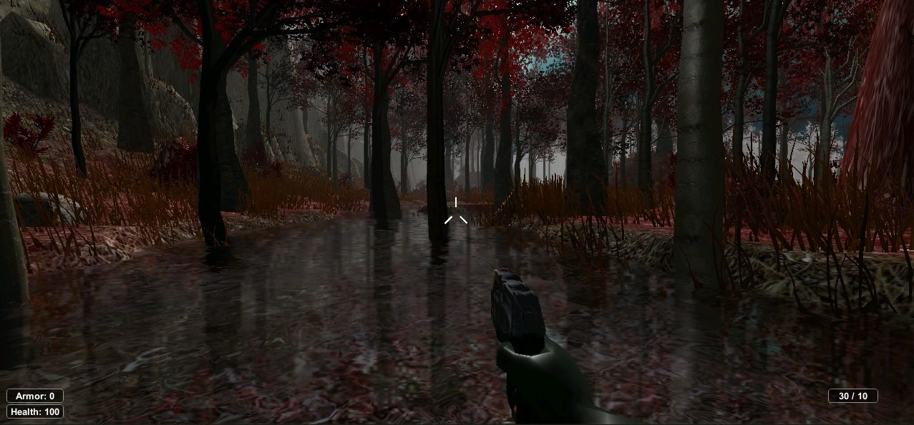

2009-től a Szegedi Tudományegyetemen kezdtem meg tanulmányaimat mérnök informatikus Bsc szakon, ahová a játékfejlesztés és programozás iránti érdeklődésem irányított. A szórakozás és alkalmi munkák mellett hagytam időt tanulásra is, végül megszereztem a diplomámat.
A szakdolgozatom témája egy FPS játék készítése volt, amit Unity3D segítségével készítettem és C# nyelven programoztam. Később publikálva egy ideig letölthetővé vált a Unity Assets Store-ban és kerestem is vele; erre fiatal egyetemistaként igazán büszke voltam.

A Unity3D-ben szerzett rutinom miatt az egyetemen keresztül kerestek meg egy állásajánlattal, amit el is fogadtam. A feladatom a DL-Weld Trainer nevű egyedi hegesztőszimulátor további fejlesztése volt, amit tanulók betanítására és a szimuláció során végzett munkájuk elemzésére szolgált. Élveztem az új kihívásokat a projektben; a munka 2014 és 2015 között zajlott.